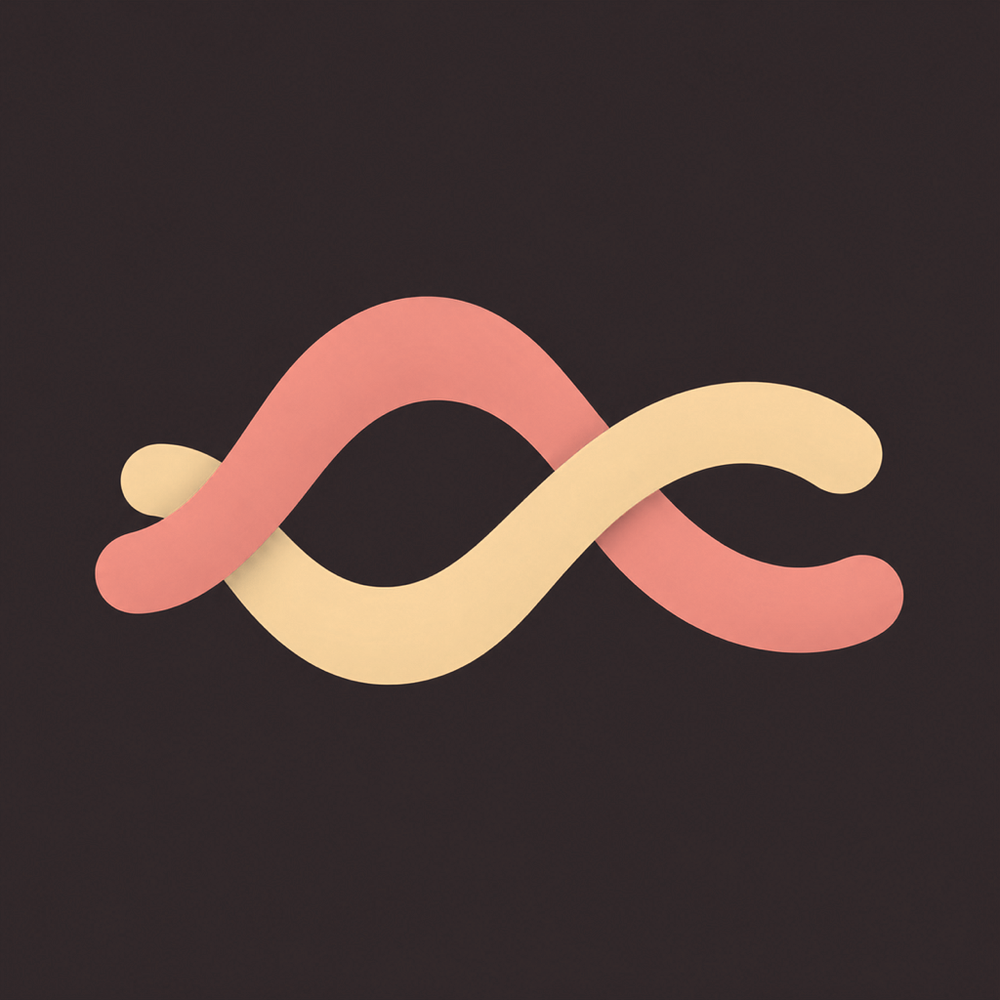

첫 화면에서 목적지 선택
기존 설정에는 42개 행이 이어집니다. 현재 테마, 앱 아이콘, 네 가지 설정 범주를 먼저 보여주고, 항목 이름을 알면 검색으로 바로 엽니다.

DUNE디자인 시안필요한 설정은 바로 열고, 테마는 한곳에서 비교합니다.
각 화면을 눌러볼 수 있습니다. 변경한 값은 이 시안에서만 유지됩니다.
기존 설정에는 42개 행이 이어집니다. 현재 테마, 앱 아이콘, 네 가지 설정 범주를 먼저 보여주고, 항목 이름을 알면 검색으로 바로 엽니다.
기본 글씨 크기에서는 세 열로 원화를 비교합니다. 하나를 열면 Today 화면의 밝고 어두운 모습을 확인할 수 있고, 적용 버튼을 누를 때 선택이 바뀝니다.
iPad의 넓은 창에서는 설정 목록을 옆에 둔 채 상세 항목을 바꿉니다. 작은 창은 한 화면씩 열고, 큰 글씨에서는 갤러리 열 수를 줄입니다.